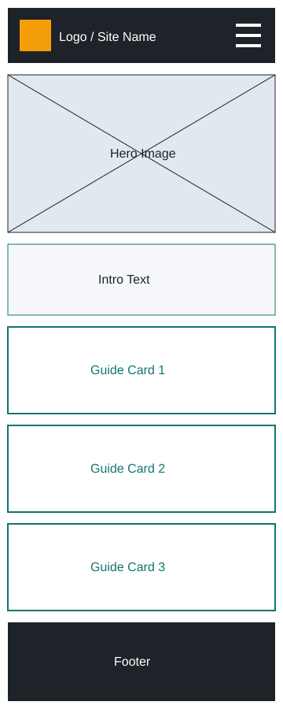
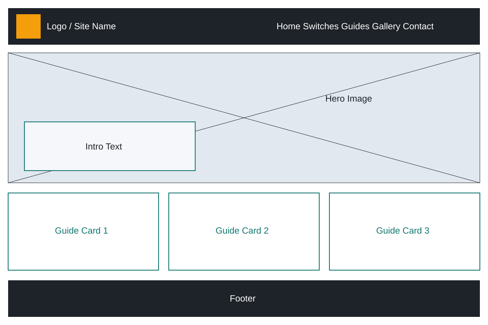

Site Name
KeyCraft Lab
- The name combines "keyboard" and "craft" to reflect hands-on building and customizing, while "Lab" suggests a place to experiment, learn, and tinker with PC hardware.
- Optional domain: keycraftlab.com
Site Purpose
KeyCraft Lab is a beginner-friendly hub for people who want to build, clean, and maintain their own mechanical keyboards and PCs. The site explains keyboard switch types and layouts, provides step-by-step DIY maintenance guides, shows a gallery of example builds, and includes a form where visitors can request a guide or share their own build.
Scenarios
- Which keyboard switch type is best for typing versus gaming?
- How do I safely clean my keyboard without damaging it?
- What tools do I need to start my first keyboard build?
- How often should I clean the dust out of my PC, and how do I do it?
Color Schema
Primary
#1E2329
Header and footer backgrounds, heading text
Secondary
#0F766E
Section headings, links, buttons
Accent
#F59E0B
Highlights, borders, hover states (always with dark text)
Background
#F5F7FA
Page background; body text uses #1E2329
Typography
Space Grotesk — Headings
Used for the site title, page headings, and navigation. Its geometric, slightly technical shape fits a hardware and tech theme.
Inter — Body Text
Used for paragraphs, lists, forms, and captions. It is highly readable at small sizes on both mobile and desktop screens.
Wireframes

